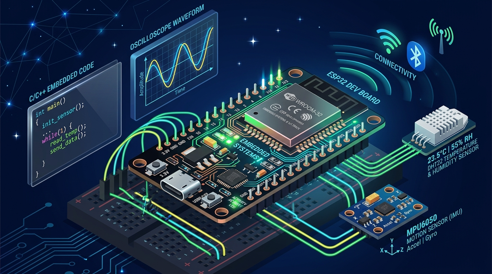

Architecting Intelligent AI & Scalable Web Systems.
Third-year Computer Science student at Alexandria University (Faculty of Science, GPA 3.22) specializing in Artificial Intelligence and Machine Learning, with extensive hands-on experience in Full-Stack Web Development (Node.js, Express, MySQL, PHP, and modern responsive UI). Currently training with the Microsoft-affiliated Digital Egypt Pioneers Initiative (DEPI). Currently Open to Work for AI/ML and Software Engineering roles.
Mohamed Abd El Aziz
AI/ML & Full-Stack Web Engineer
Bridging Machine Learning & Software Engineering
A third-year Computer Science student with a disciplined approach to turning data into real-world impact.
I am a third-year Computer Science student at the Faculty of Science, Alexandria University, specializing in Artificial Intelligence and Machine Learning. Currently, I am advancing as a Machine Learning Engineer Trainee through the prestigious, Microsoft-affiliated Digital Egypt Pioneers Initiative (DEPI).
My foundation centers on the end-to-end applied machine learning lifecycle — from rigorous data preparation, exploratory data analysis, and feature engineering to model training, evaluation, and production deployment.
What distinguishes my work is a disciplined, deadline-driven approach shaped by solid time management, stress management under pressure, and a consistent focus on delivering polished, working final products — whether training predictive models in Python or architecting full-stack web platforms and desktop enterprise systems.
Industry-aligned training under Microsoft framework for data pipelines, model building, and metric benchmarking.
Enterprise OOP design in JavaEE, database transaction management, and full-stack software development.
Languages
Alexandria University
Bachelor in Computer Science, Faculty of Science
2024 – Present (Expected 2028) • GPA: 3.22
Skills & Technologies
Practical tools and frameworks leveraged across machine learning, data engineering, and full-stack software development.
End-to-end machine learning engineering workflow from data collection and cleaning to model deployment and evaluation.
Predictive classification, regression, and clustering algorithms built with mathematical understanding and algorithmic rigor.
Handling missing data, outlier detection, numerical scaling, categorical encoding, and feature extraction for optimal model performance.
Rigorously quantifying model generalization, avoiding overfitting, tuning hyperparameters, and validating with cross-validation.
Systematic prompt design for large language models, few-shot prompting, structured output parsing, context chaining, and prompt guardrails.
Industry-standard Python library for building reproducible ML pipelines, estimators, transformers, and model selection.
High-performance data manipulation, exploratory data inspection, multi-index aggregation, filtering, and tabular transformations.
High-performance multi-dimensional array operations, vectorized linear algebra calculations, broadcasting, and matrix math.
Publication-quality statistical graphics, correlation heatmaps, feature distribution plots, pairplots, and model diagnostic curves.
Core programming language for machine learning, predictive modeling, data science automation, algorithms, and OOP.
Enterprise-grade application architecture, JavaFX modern graphical interfaces, JDBC connectivity, and ACID transaction safety.
Relational database design, normalization (1NF-3NF), complex queries, indexing optimization, and ACID-compliant transactions.
Server-side backend programming, session authentication, dynamic content generation, and database CRUD integration.
Modern client-side scripting, asynchronous event-driven programming (async/await), DOM manipulation, and Node.js.
Asynchronous event-driven backend architectures, RESTful API design, middleware pipelines, JWT auth, and server-side processing.
Semantic HTML5, advanced CSS3 glassmorphism, responsive grid/flexbox layouts, JavaScript ES6+, and interactive DOM manipulation.
Source code version control, collaborative branching strategies, pull requests, repository management, and GitHub workflows.
Industry-standard applied machine learning engineering tooling, structured project milestones, and cloud-aligned ML workflows.
Interactive exploratory data analysis in Jupyter/Colab, code authoring in VS Code / IDEs, and command-line terminal management.
Featured Projects
Real-world production platforms, enterprise architectures, and applied machine learning pipelines.
 Featured Full-Stack System
Featured Full-Stack System
A modern, full-stack career platform designed to help learners master in-demand technology fields through 12 comprehensive career tracks (108 phases), interactive roadmaps, OTP email verification, secure password reset, and an admin management dashboard.

Enterprise Desktop AppAn enterprise-grade desktop banking core system developed with JavaEE and JavaFX. Incorporates multi-user role authentication, real-time account ledger management, deposit/withdrawal/fund transfer transactions with ACID compliance, and complete audit logging.
End-to-end applied machine learning engineering workflow built during the DEPI Microsoft and IBM Coursera training. Integrates data wrangling with Pandas/NumPy, statistical visualization, feature engineering, and model evaluation benchmarking.
Transparent Pricing for High-Impact AI & Software
Modern tier options structured for fast iteration and dependable delivery — from deep exploratory data insights to predictive machine learning pipelines and full-stack software production.
EDA & Data Intelligence
Transform raw, messy data into clean, statistically verified datasets with publication-grade visualizations and clear actionable takeaways.
- In-depth Exploratory Data Analysis (EDA)
- Outlier detection, anomalies & imputation
- Clean, structured exports (CSV / Parquet / SQL)
- Statistical distributions & feature correlations
- Visual graphs (Matplotlib & Seaborn)
- Actionable executive insights summary
- Documented, reproducible Jupyter Notebook
Predictive ML & Pipelines
Supervised and unsupervised machine learning models engineered for high accuracy, low generalization error, and automated decisions.
- End-to-end Feature Engineering & Scaling
- Predictive Algorithms (Classification & Regression)
- Hyperparameter Tuning (GridSearchCV / Random)
- K-Fold Cross-Validation to eliminate overfitting
- Benchmarking: ROC-AUC, F1-Score, Confusion Matrix
- Exported Serialized Model Pipeline (.joblib / .pkl)
- Prompt Engineering & LLM APIs (OpenAI / Chat)
- 2 Iterative review cycles + 1-on-1 code walkthrough
Full-Stack AI & Integration
The Production Bridge: connecting trained predictive AI or LLMs directly into an interactive web app, RESTful API, or desktop software.
- RESTful API Microservice (Node.js/Express or FastAPI)
- Interactive Web Dashboard / UI (HTML5, Modern CSS, JS)
- Or JavaFX Desktop System with JDBC & ACID safeguards
- Secure Authentication (JWT / Multi-Role Access Control)
- Relational Database Schema Design (MySQL / PostgreSQL)
- Advanced Prompt Engineering with Context Chaining
- Docker Containerization & Cloud Deployment Setup
- 30-Day Post-Launch Maintenance & Support
Have a Specialized Enterprise Scope or Need Ongoing Fractional AI Support?
From bespoke deep learning research to custom SaaS backend architectures or academic collaborations, I provide tailored scopes with defined milestones.
Experience & Education
Structured training in machine learning engineering alongside academic foundations in Computer Science.
Machine Learning Engineer Trainee
- Undergoing an intensive, industry-aligned track covering the applied machine learning engineering lifecycle, from data preparation through model development and evaluation.
- Working within Microsoft's learning framework and tooling to build practical, job-ready ML engineering skills.
- Applying structured projects and disciplined time management to consistently deliver completed, working exercises and assignments on schedule.
Bachelor in Computer Science
- Specializing in Artificial Intelligence and Machine Learning with core foundations in Data Structures, Algorithms, Database Management, and OOP.
- Consistent academic standing with 3.22 GPA, combining theoretical mathematics with hands-on software development.
- Collaborating on academic and departmental software projects adhering to strict deadlines and high engineering standards.
Certifications & Accreditations
Industry-recognized professional certificates validating specialized knowledge in AI & Machine Learning.
Machine Learning with Python
20 hours intensive training covering supervised/unsupervised algorithms, regression, classification, clustering, and Scikit-Learn pipelines.
IBM • via CourseraAI Engineering Professional Certificate
Comprehensive professional track focusing on deep learning fundamentals, neural network architectures, and applied AI systems.
IBM (Current) • via CourseraApplied Machine Learning Track
End-to-end ML lifecycle, data wrangling, model evaluation, and Microsoft-aligned technical practices.
DEPI & Microsoft AffiliationOracle AI Foundation Badge 2026
Foundational accreditation in modern artificial intelligence, machine learning concepts, cloud AI services, and enterprise AI architectures.
Oracle • 2026 Verified CredentialChatGPT Prompt Engineering for Developers
Principles of prompt engineering for developer applications, iterative prompt development, text summarization, inferring sentiment, transformation, and expanding with LLMs.
Andrew Ng & Isa Fulford • DeepLearning.AI & OpenAIRecognized for Team Leadership & Technical Delivery
Authentic feedback from university capstone peers, project teammates, and training colleagues highlighting architectural rigor, milestone execution, and leadership under pressure.
"Mohamed served as our lead architect and team coordinator for our major software engineering capstone project at Alexandria University. When we faced severe deadline constraints and complex database-to-UI sync issues, Mohamed stepped up with a calm, structured plan. He broke the project into structured daily sprints, resolved the toughest architectural roadblocks himself, and kept all five of us motivated and synchronized. We delivered a complete, polished software suite ahead of deadline. He is a natural engineering leader who excels under pressure."
"Collaborating with Mohamed during the intensive Microsoft-affiliated DEPI program has been thoroughly impressive. His grasp of statistical machine learning, Scikit-Learn pipelines, and model evaluation metrics is top-tier. Whenever our study cohort encountered complex tuning issues or data preprocessing edge cases, Mohamed was always ready to unblock teammates with clear, patient explanations and robust code."
"Reviewing Mohamed's DevPath platform architecture demonstrated what true full-stack capability looks like. He built a high-performance Node.js/Express REST backend, robust JWT token validation with OTP verification, and integrated 12 comprehensive track curriculums with seamless admin management. His code structure is clean, modular, and built with production discipline in mind."
"In our Bank Management System project, Mohamed led the enterprise architecture implementation using JavaEE and JavaFX. He strictly enforced the DAO pattern and engineered robust ACID database transaction rollbacks to prevent fund transfer concurrency anomalies. His attention to operational reliability, edge cases, and role-based access control was far beyond what you typically see at the undergraduate level. A truly disciplined engineer."
Ready to Build Next-Generation AI & Scalable Software?
Looking for an engineer who combines rigorous mathematical machine learning foundations with full-stack delivery, enterprise OOP architecture, and disciplined deadlines? Let's connect to discuss how I can bring immediate value to your engineering team or upcoming product.
Let's Build Something Exceptional
I am currently Open to Work and actively interviewing for AI/ML Engineering, Data Science, and Software Development positions. Feel free to reach out directly.